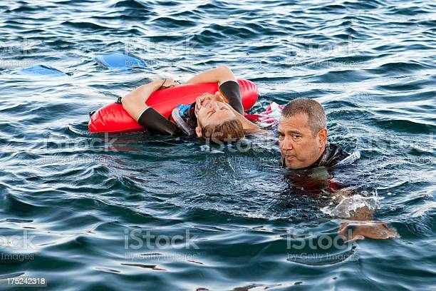

<!DOCTYPE html>
<html xmlns="http://www.w3.org/1999/xhtml"></html>
<html lang="en">
  <head>
    <meta charset="UTF-8" />
    <meta http-equiv="X-UA-Compatible" content="IE=edge" />
    <meta name="viewport" content="width=device-width, initial-scale=1.0" />
    <title>La familia logra sobrevivir</title>
    <link rel="stylesheet" href="bootstrap/css/bootstrap.min.css" />
    <style>
          body {
        font-family: Verdana, Geneva, Tahoma, sans-serif;
      }
      h2 {
        color: black;
        text-align: left;
        font-size: 16px;
        margin-left: 30px;
        margin-top: 30px;
        margin-bottom: 60px;
      }

      h1 {
        color: darkblue;
        text-align: center;
        font-size: 37px;
        margin-top: 30px;
        margin-bottom: 60px;
      }
      p {
        color: black;
        text-align: justify;
        font-size: 25px;
       
      }
      a {
        background-color: darkblue;
        color: white;
        text-align: center;
        text-decoration: none;
        margin: 6px;
        border-style: solid;
        padding: 10px;
        border-color: darkturquoise;
        font-size: 17px;
        margin-top: 20px;
        margin-bottom: 20px;
      }
      nav {
        text-align: center;
        font-size: 20px;
        margin-top: 60px;
        margin-bottom: 60px;
      }
      footer {
        background-color: darkblue;
        margin: 6px;
        border-style: solid;
        padding: 1px;
        border-color: darkturquoise;
        color: white;
        text-align: center;
        font-size: 17px;
      }
    </style>
  </head>
  <body>
    <header>
      <h2>Sustos y tragedias en Misiones</h2>
      <h1>La familia logra sobrevivir</h1>
    </header>

    <div class="container p-2">
      <div class="row p-2">
        <div class="col-md-7">
          <p>
            Al darse vuelta la lancha, quedamos atascados con la cuerda de los
            chaleco salvavidas, no nos podíamos soltar, mientras nos estábamos
            ahogando mi papa logro agarrar un cúter que tenían en el botiquín de
            primeros auxilios, él estirándose lo más posible logro cortarnos la
            cuerda y así pudimos salir a flote a la superficie.
          </p>

        </div>
        <div class="col-md-5">
          
        </div>
      </div>
      <div class="row p-2">
        <div class="col-md-12">
          <p>
            Luego de lo sucedido nos llevaron al hospital a ver si teníamos algún
            tipo de lesión, pero por suerte no fue así, solamente el susto del
            momento y después nos fuimos para el hotel. Pocos minutos más tarde
            llamaron a mi mama desde la empresa del paseo y decidieron devolvernos
            el dinero ya que no pudimos completar el paseo y más la mala situación
            por la que pasamos, por la culpa del conductor irresponsable, que por
            suerte y también agradezco, fue despedido del trabajo.
          </p>

        </div>
      </div>
    </div>
    
    <nav>
        <a href="index.html">Volver al inicio</a>
    </nav>
    <footer> Autor: Ezequiel Daher</footer>
    <script src="bootstrap/js/bootstrap.bundle.min.js"></script>

  </body>
</html>
